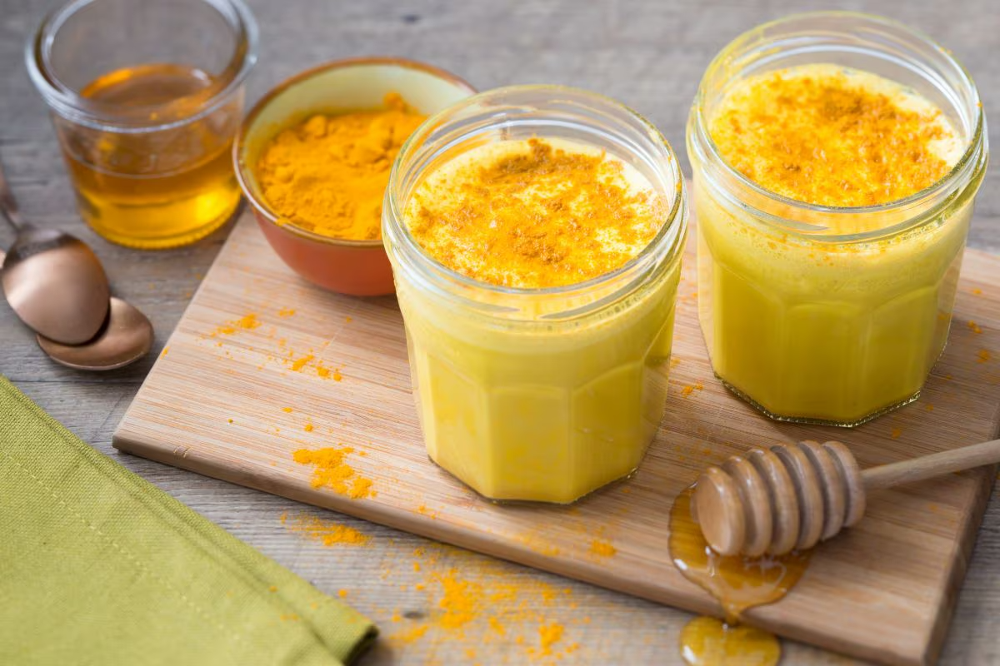
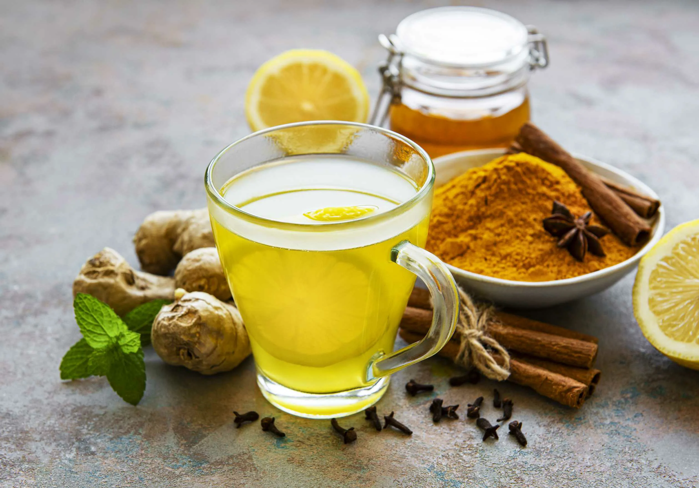

Kurkuma-Smoothie & Co – Trends aus dem Netz, die ich selbst ausprobiert habe
Ich bin 33, arbeite als Model – und ja, das bedeutet: keine Ausreden, kein „ich nehm halt zu“. Jeder Dreh, jede Kampagne erinnert mich daran, wie streng mein Körper beobachtet wird. Aber was auf Bildern leicht aussieht, ist oft das Ergebnis von Disziplin, Müdigkeit, und ständigen Zweifeln.
Ich habe vieles ausprobiert, was angeblich beim Abnehmen helfen soll. Gerade Kurkuma-Rezepte tauchen überall auf – in Foren, auf TikTok, in Ratgebern. Und ich gebe zu: auch ich habe gehofft, dass vielleicht irgendetwas davon funktioniert. Gespoilert? Hat es nicht. Trotzdem bin ich bei ein paar Dingen geblieben. Nicht, weil sie „Fett schmelzen lassen“, sondern weil sie mir guttun. Und darum geht’s ja am Ende, oder?
Mein Favorit: Kurkuma Ananas Smoothie
Ich habe diesen Smoothie zuerst gemixt, weil er angeblich den Stoffwechsel ankurbelt. Hat er das? Ehrlich – keine Ahnung. Abgenommen habe ich dadurch jedenfalls nicht. Aber ich mag ihn trotzdem:
- ½ frische Ananas (oder TK)
- 1 TL Kurkuma-Pulver
- 1 kleines Stück Ingwer
- Saft von ½ Zitrone
- 1 Glas Wasser oder Kokoswasser
Frisch, würzig, leicht. Kein Zaubertrank – aber ein schöner Moment am Tag.
Morgens warm: Kurkuma Ingwer Zitronenwasser
Ich trinke das gleich nach dem Aufstehen. Nicht, weil es Kalorien verbrennt – sondern weil es mich an etwas erinnert: langsam anfangen. Mich nicht überfordern.
- 1 TL frisch geriebener Ingwer
- ½ TL Kurkuma
- Saft einer Zitrone
Schnell & gut: Kurkuma im Joghurt
Zwischen Terminen oder unterwegs: Naturjoghurt mit etwas Kurkuma und Beeren. Kein „Trick“, aber praktisch.
- Naturjoghurt
- ½ TL Kurkuma
- ein paar Beeren oder ein Teelöffel Honig
Etwas Ungewöhnliches: Kurkuma Reis Wasser
Habe ich aus Neugier ausprobiert. Lauwarm trinken – soll beim Entgiften helfen. Ich glaube nicht an Detox, aber es schmeckt mild und tut mir gut.
Mein Klassiker: Kurkuma Quark am Abend
Nach einem langen Tag esse ich lieber leicht. Dieser Quark macht satt, liegt nicht schwer – und bewahrt mich davor, zum Toast mit Nutella zu greifen.
- Magerquark
- 1 TL Kurkuma
- etwas Leinöl oder ein paar Walnüsse
Mein Fazit
Nicht jede Idee auf dieser Seite hat mich beim Abnehmen unterstützt – aber viele haben mir gutgetan. Sie gehören zu meinem Alltag, weil sie einfach sind, weil sie mir schmecken, weil ich mich mit ihnen wohler fühle. Vielleicht ist auch für dich etwas dabei. Und wer weiß – vielleicht begegnen wir uns hier bald wieder, bei einer neuen Tasse Kurkuma-Tee.
📩 Hast du auch schon mal mit solchen Getränken versucht abzunehmen?
Oder hast du andere Methoden aus den sozialen Medien ausprobiert – und sie haben dir nicht geholfen oder vielleicht doch?
Schreib mir gern und erzähl mir deine Geschichte: claravogel1991@gmail.com
Ich freue mich immer über ehrliche Nachrichten.
Clara Vogel